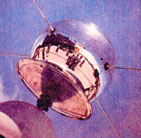

1839 Edmund Becquerel, a French physicist, observes the photovoltaic effect.
1880s Selenium PV cells are built that convert light in the visible spectrum into electricity - they're 1% to 2% efficient. Light sensors for cameras are made from selenium to this day.
In the early 1950s the Czochralski meter is developed for producing pure crystalline silicon.
In 1954 Bell Telephone Laboratories produces a silicon PV cell with a 4% efficiency, which eventually graduates to 11% efficiency.
In 1958 the U.S. Vanguard space satellite (above) uses a small (less than one watt) array to power its radio. The space program has played an important role in the development of PVs ever since.
During the 1973-74 oil embargo the U.S. Department of Energy funds the Federal Photovoltaic Utilization Program, resulting in the installation and testing of more than 3,100 PV systems, many of which continue to operate.
From the 1970s through the 1990s, North American interest in solar power wanes. Majority ownership of many United States PV manufacturers transfers to German and Japanese interests.
|
 |
|
|